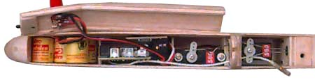

As you can see, there isn't a lot of extra room in the fuse. I designed it around the gear I had on hand, and actually made it a bit too narrow for my rx. More on that later. From left to right, we have the following. 4x110ma sanyo cells. 3/32" phono plug charge jack/switch (glued into hatch cover), Futaba Attack receiver (sans case), FMA S-80 servos for elevator, and rudder via sliding tray.
Modifications to the radio gear. When I measured the thickness of the radio gear, as well as my fingers, I decided on 3/4" as a suitable inside dimension for width. What I hadn't measured was the clearance needed for the leads when plugged into the rx. Of course I didn't notice this until the fuse was framed up! To make it all fit, I removed the connector block from the rx, and considered hardwiring pigtails to the board. As that would have added a few grams of unnecessary weight, I modified the original design. Removing 8 pins from the connector block, I soldered them directly to the circuit board. So far, this seems to be okay, but I am being careful. A stock Futaba servo connector has about 1/16" of plastic before the metal sleeves begin. Trimming this plastic gave me a bit more clearance. Oh yeah, it also saved some weight. :-)
Speaking of weight, the original wire on the servos was long and heavy. I replaced the stock leads with spare Futaba leads, shortened to a practical minimum. This dropped the weight of the servos to about 8.5 grams. Another place to save some weight is the Futaba antenna. It is a bit heavier than necessary. A gram or so can be saved by using lighter wire. As the antenna is buried in the wing, a small pigtail with a single pin connector is all that remains of the original rx antenna.
The rudder servo had mounting lugs trimmed, and pieces of tubing CyA'ed onto the sides of the case. There was no weight gain. The rails for the sliding tray are 1/32" carbon rod, press fitted in place to allow later removal.
Copyright 1998-99, Thayer Syme. All rights reserved